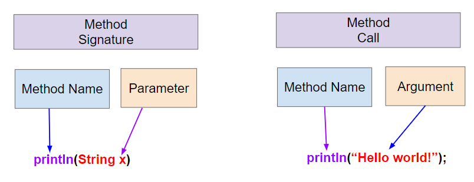
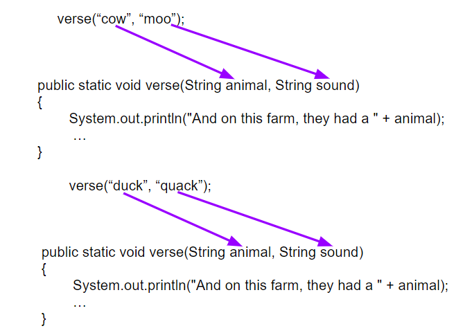

Main as Outline
Method calls show the program structure
Main methods often read like an outline: high-level calls appear in the order the program should run.
Using Objects and Methods
Until now, most code has been inside main. Complex programs are made up of many methods (方法).
A method is a named block of code that performs a task when it is called.
{ }.Procedural abstraction (过程抽象) lets a programmer use a method by knowing what it does, even without knowing exactly how it is implemented.
Everyday analogy:
println() without knowing the full PrintStream implementation.This is how large programs stay readable.
The textbook uses song lyrics because repeated lines make method extraction visible.
Repeated lines in an Old MacDonald verse include:
When you see identical code repeated, ask whether it should become a named method.
A method call includes the method name and parentheses.
When a method is called:
public class OldMacDonaldSong
{
public static void intro()
{
System.out.println("Old MacDonald had a farm");
chorus();
}
public static void chorus()
{
System.out.println("E-I-E-I-O");
}
public static void main(String[] args)
{
intro();
System.out.println("And on that farm they had a cow.");
chorus();
intro();
}
}Execution starts in main, then jumps through calls.
Scroll to main and add a second verse by calling existing methods.
public static void main(String[] args)
{
intro();
System.out.println("And on that farm they had a cow.");
chorus();
System.out.println("With a moo moo here and a moo moo there");
System.out.println("Here a moo, there a moo, everywhere a moo moo");
// 1. Call intro().
// 2. Print a line with a duck or another animal.
// 3. Call chorus().
// 4. Print the animal sound lines.
// 5. Call intro() again.
}Completion checks: at least 3 calls to intro() and 3 calls to chorus().
What does this code print?
where eat() prints eat and fruit() prints apples and bananas!.
Answer:
The method header is the first line of a method.
It includes:
For this lesson, many examples use the return type void, which means the method does not return a value.

Method signature and method call
A method signature consists of:
A method without parameters has the method name and an empty parameter list.
Examples from PrintStream:
Corresponding calls:
The argument must be compatible with the parameter type in the method signature.
The parameter is declared in the method header.
The argument is the actual value passed into the method call.
Arguments can be literals, variables, or expressions that evaluate to the correct type.
Old MacDonald verses repeat the same structure, but these parts change:
cow, duckmoo, quackThose changing values are good candidates for parameters.
This is the design move: keep the shared structure in one method, pass the changing values as arguments.
public static void verse(String animal, String sound)
{
System.out.println("And on this farm, they had a " + animal);
chorus();
System.out.println("With a " + sound + " " + sound
+ " here and a " + sound + " " + sound + " there");
System.out.println("Here a " + sound
+ ", there a " + sound
+ ", everywhere a " + sound + " " + sound);
}The parameters animal and sound hold different values for each call.
Main methods often read like an outline: high-level calls appear in the order the program should run.
Add a verse with animal goose and sound honk, then call intro() again. Repeat with another animal and sound of your choice.
Completion checks: include verse("goose", "honk"); and at least 5 calls to intro().

Arguments to parameters
Java chooses the right method by checking:
Method headers contain types; method calls contain values.
Java uses call by value when it passes arguments to methods.
That means:
For now, read method calls as passing values into named parameter variables.
Methods are overloaded when multiple methods have the same name but different signatures.
Example:
The compiler determines which version to call from the number and types of arguments.
The Ants Go Marching repeats structure with different values.
Changing phrases:
| Verse | num argument |
action argument |
|---|---|---|
| 1 | "one" |
"suck a thumb" |
| 2 | "two" |
"tie a shoe" |
| 3 | "three" |
"climb a tree" |
These changing phrases become arguments to chorus(num) and verse(num, action).
Write code in main that calls chorus and verse to print all three verses.
public class AntsSong
{
public static void chorus(String num)
{
System.out.println("The ants go marching " + num
+ " by " + num + ", hurrah, hurrah");
System.out.println("The ants go marching " + num
+ " by " + num + ", hurrah, hurrah");
}
public static void verse(String num, String action)
{
System.out.println("The ants go marching " + num + " by " + num);
System.out.println("The little one stops to " + action);
System.out.println("And they all go marching down to the ground");
System.out.println("To get out of the rain, BOOM! BOOM! BOOM! BOOM!\n");
}
}Your main method should call:
A strong solution uses method calls instead of copying all song lines into main.
purr meow purr?Correct call sequence: hello(); sound2();
| Definition | Concept |
|---|---|
| named block of code to perform a task | method |
| where execution starts | main method |
| method name and ordered parameter types | method signature |
| variable declared in a method header | parameter |
| value passed into a method call | argument |
Use this vocabulary precisely when reading API documentation.